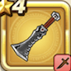

ソードブレイカー
攻略班 5.0点 / ヴァイパーファングタナトスハントジバリカ
くわしい特徴
【レベル別習得スキル】 Lv1ヴァイパーファング（消費MP：5）刃に猛毒を宿し敵1体に威力130%の斬撃ダメージを与えたまに猛毒を与える Lv8タナトスハント（消費MP：7）敵1体が麻痺・毒状態であれば威力250%の斬撃ダメージを与える Lv20ジバリカ（消費MP：12）行動時に大爆発する魔法陣を仕掛け敵1体にジバリア属性の呪文小ダメージを与える Lv28けもの系へのダメージ+10% Lv36攻撃時+2%の確率で毒を与える Lv40攻撃力+8 【限界突破スキル】 1凸スキルの斬撃・体技ダメージ+5% 2凸スキルの斬撃・体技ダメージ+5% 3凸スキルの斬撃・体技ダメージ+5% 4凸スキルの斬撃・体技ダメージ+5%